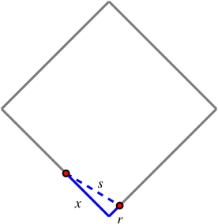

{In this section, we strive to understand the ideas generated by the following important questions:
If two quantities that are related, such as the radius and volume of a spherical balloon, are both changing as implicit functions of time, how are their rates of change related? That is, how does the relationship between the values of the quantities affect the relationship between their respective derivatives with respect to time?
}
Subsection3.5.1Introduction
In most of our applications of the derivative so far, we have worked in settings where one quantity (often called \(y\)) depends explicitly on another (say \(x\)), and in some way we have been interested in the instantaneous rate at which \(y\) changes with respect to \(x\), leading us to compute \(\frac{dy}{dx}\). These settings emphasize how the derivative enables us to quantify how the quantity \(y\) is changing as \(x\) changes at a given \(x\)-value.
We are next going to consider situations where multiple quantities are related to one another and changing, but where each quantity can be considered an implicit function of the variable \(t\), which represents time. Through knowing how the quantities are related, we will be interested in determining how their respective rates of change with respect to time are related. For example, suppose that air is being pumped into a spherical balloon in such a way that its volume increases at a constant rate of 20 cubic inches per second. It makes sense that since the balloon's volume and radius are related, by knowing how fast the volume is changing, we ought to be able to relate this rate to how fast the radius is changing. More specifically, can we find how fast the radius of the balloon is increasing at the moment the balloon's diameter is 12 inches?
The following preview activity leads you through the steps to answer this question.
Preview Activity
A spherical balloon is being inflated at a constant rate of 20 cubic inches per second. How fast is the radius of the balloon changing at the instant the balloon's diameter is 12 inches? Is the radius changing more rapidly when \(d = 12\) or when \(d = 16\)? Why?
Draw several spheres with different radii, and observe that as volume changes, the radius, diameter, and surface area of the balloon also change.
Recall that the volume of a sphere of radius \(r\) is \(V = \frac{4}{3} \pi r^3\). Note well that in the setting of this problem, both\(V\) and \(r\) are changing as time \(t\) changes, and thus both \(V\) and \(r\) may be viewed as implicit functions of \(t\), with respective derivatives \(\frac{dV}{dt}\) and \(\frac{dr}{dt}\).
Differentiate both sides of the equation \(V = \frac{4}{3} \pi r^3\) with respect to \(t\) (using the chain rule on the right) to find a formula for \(\frac{dV}{dt}\) that depends on both \(r\) and \(\frac{dr}{dt}\).
At this point in the problem, by differentiating we have “related the rates” of change of \(V\) and \(r\). Recall that we are given in the problem that the balloon is being inflated at a constant rate of 20 cubic inches per second. Is this rate the value of \(\frac{dr}{dt}\) or \(\frac{dV}{dt}\)? Why?
From part (c), we know the value of \(\frac{dV}{dt}\) at every value of \(t\). Next, observe that when the diameter of the balloon is 12, we know the value of the radius. In the equation \(\frac{dV}{dt} = 4\pi r^2 \frac{dr}{dt}\), substitute these values for the relevant quantities and solve for the remaining unknown quantity, which is \(\frac{dr}{dt}\). How fast is the radius changing at the instant \(d = 12\)?
How is the situation different when \(d = 16\)? When is the radius changing more rapidly, when \(d = 12\) or when \(d = 16\)?
Subsection3.5.2Related Rates Problems
In problems where two or more quantities can be related to one another, and all of the variables involved can be viewed as implicit functions of time, \(t\), we are often interested in how the rates of change of the individual quantities with respect to time are themselves related; we call these related rates problems.\knownindex{\lt main>related rates\lt /main>} Often these problems involve identifying one or more key underlying geometric relationships to relate the variables involved. Once we have an equation establishing the fundamental relationship among variables, we differentiate implicitly with respect to time to find connections among the rates of change.
For example, consider the situation where sand is being dumped by a conveyor belt on a pile so that the sand forms a right circular cone, as pictured in Figure 3.5.1.
Figure3.5.1A conical pile of sand.
As sand falls from the conveyor belt onto the top of the pile, obviously several features of the sand pile will change: the volume of the pile will grow, the height will increase, and the radius will get bigger, too. All of these quantities are related to one another, and the rate at which each is changing is related to the rate at which sand falls from the conveyor.
The first key steps in any related rates problem involve identifying which variables are changing and how they are related. In the current problem involving a conical pile of sand, we observe that the radius and height of the pile are related to the volume of the pile by the standard equation for the volume of a cone,
\[
V = \frac{1}{3} \pi r^2 h.
\]
Viewing each of \(V\), \(r\), and \(h\) as functions of \(t\), we can differentiate implicitly to determine an equation that relates their respective rates of change. Taking the derivative of each side of the equation with respect to \(t\),
On the left, \(\frac{d}{dt}[V]\) is simply \(\frac{dV}{dt}\). On the right, the situation is more complicated, as both \(r\) and \(h\) are implicit functions of \(t\), hence we have to use the product and chain rules. Doing so, we find that
Note particularly how we are using ideas from Section 2.7 on implicit differentiation. There we found that when \(y\) is an implicit function of \(x\), \(\frac{d}{dx}[y^2] = 2y \frac{dy}{dx}\). The exact same thing is occurring here when we compute \(\frac{d}{dt}[r^2] = 2r \frac{dr}{dt}\).
we have now related the rates of change of \(V\), \(h\), and \(r\). If we are given sufficient information, we may then find the value of one or more of these rates of change at one or more points in time. Say, for instance, that we know the following: (a) sand falls from the conveyor in such a way that the height of the pile is always half the radius, and (b) sand falls from the conveyor belt at a constant rate of 10 cubic feet per minute. With this information given, we can answer questions such as: how fast is the height of the sandpile changing at the moment the radius is 4 feet?
The information that the height is always half the radius tells us that for all values of \(t\), \(h = \frac{1}{2}r\). Differentiating with respect to \(t\), it follows that \(\frac{dh}{dt} = \frac{1}{2} \frac{dr}{dt}\). These relationships enable us to relate \(\frac{dV}{dt}\) exclusively to just one of \(r\) or \(h\). Substituting the expressions involving \(r\) and \(\frac{dr}{dt}\) for \(h\) and \(\frac{dh}{dt}\), we now have that
Since sand falls from the conveyor at the constant rate of 10 cubic feet per minute, this tells us the value of \(\frac{dV}{dt}\), the rate at which the volume of the sand pile changes. In particular, \(\frac{dV}{dt} = 10\) ft\(^3\)/min. Furthermore, since we are interested in how fast the height of the pile is changing at the instant \(r = 4\), we use the value \(r = 4\) along with \(\frac{dV}{dt} = 10\) in Equation (3.5.1), and hence find that
With only the value of \(\left. \frac{dr}{dt} \right|_{r=4}\) remaining unknown, we solve for \(\left. \frac{dr}{dt} \right|_{r=4}\) and find that \(10 = 8 \pi \left. \frac{dr}{dt} \right|_{r=4}\), so that
feet per second. Because we were interested in how fast the height of the pile was changing at this instant, we want to know \(\frac{dh}{dt}\) when \(r = 4\). Since \(\frac{dh}{dt} = \frac{1}{2} \frac{dr}{dt}\) for all values of \(t\), it follows
Note particularly how we distinguish between the notations \(\frac{dr}{dt}\) and \(\left. \frac{dr}{dt} \right|_{r=4}\). The former represents the rate of change of \(r\) with respect to \(t\) at an arbitrary value of \(t\), while the latter is the rate of change of \(r\) with respect to \(t\) at a particular moment, in fact the moment \(r = 4\). While we don't know the exact value of \(t\), because information is provided about the value of \(r\), it is important to distinguish that we are using this more specific data.
The relationship between \(h\) and \(r\), with \(h = \frac{1}{2}r\) for all values of \(t\), enables us to transition easily between questions involving \(r\) and \(h\). Indeed, had we known this information at the problem's outset, we could have immediately simplified our work. Using \(h = \frac{1}{2}r\), it follows that since \(V = \frac{1}{3} \pi r^2 h\), we can write \(V\) solely in terms of \(r\) to have
From this last equation, differentiating with respect to \(t\) implies
\[
\frac{dV}{dt} = \frac{1}{2} \pi r^2,
\]
from which the same conclusions made earlier about \(\frac{dr}{dt}\) and \(\frac{dh}{dt}\) can be made.
Our work with the sandpile problem above is similar in many ways to our approach in Preview Activity , and these steps are typical of most related rates problems. In certain ways, they also resemble work we do in applied optimization problems, and here we summarize the main approach for consideration in subsequent problems.
Identify the quantities in the problem that are changing and choose clearly defined variable names for them. Draw one or more figures that clearly represent the situation.
Determine all rates of change that are known or given and identify the rate(s) of change to be found.
Find an equation that relates the variables whose rates of change are known to those variables whose rates of change are to be found.
Differentiate implicitly with respect to \(t\) to relate the rates of change of the involved quantities.
Evaluate the derivatives and variables at the information relevant to the instant at which a certain rate of change is sought. Use proper notation to identify when a derivative is being evaluated at a particular instant, such as \(\left. \frac{dr}{dt} \right|_{r=4}\).
In the first step of identifying changing quantities and drawing a picture, it is important to think about the dynamic ways in which the involved quantities change. Sometimes a sequence of pictures can be helpful; for some already-drawn pictures that can be easily modified as applets built in Geogebra, see the following links 1 We again refer to the work of Prof. Marc Renault of Shippensburg University, found at \href{http://gvsu.edu/s/5p}{http://gvsu.edu/s/5p}. which represent
how a circular oil slick's area grows as its radius increases \href{http://gvsu.edu/s/9n}{http://gvsu.edu/s/9n};
how the location of the base of a ladder and its height along a wall change as the ladder slides \href{http://gvsu.edu/s/9o}{http://gvsu.edu/s/9o};
how the water level changes in a conical tank as it fills with water at a constant rate
\href{http://gvsu.edu/s/9p}{http://gvsu.edu/s/9p} (compare the problem in Activity 3.5.2);
how a skateboarder's shadow changes as he moves past a lamppost
\href{http://gvsu.edu/s/9q}{http://gvsu.edu/s/9q}.
Drawing well-labeled diagrams and envisioning how different parts of the figure change is a key part of understanding related rates problems and being successful at solving them.
A water tank has the shape of an inverted circular cone (point down) with a base of radius 6 feet and a depth of 8 feet. Suppose that water is being pumped into the tank at a constant instantaneous rate of 4 cubic feet per minute.
Draw a picture of the conical tank, including a sketch of the water level at a point in time when the tank is not yet full. Introduce variables that measure the radius of the water's surface and the water's depth in the tank, and label them on your figure.
Say that \(r\) is the radius and \(h\) the depth of the water at a given time, \(t\). What equation relates the radius and height of the water, and why?
Determine an equation that relates the volume of water in the tank at time \(t\) to the depth \(h\) of the water at that time.
Through differentiation, find an equation that relates the instantaneous rate of change of water volume with respect to time to the instantaneous rate of change of water depth at time \(t\).
Find the instantaneous rate at which the water level is rising when the water in the tank is 3 feet deep.
When is the water rising most rapidly: at \(h = 3\), \(h = 4\), or \(h = 5\)?
Letting \(r\) represent the water's radius at time \(t\) and \(h\) the water's depth, we see the following situation:
Observe that the right triangle with legs of length \(h\) and \(r\) is similar to the right triangle with legs of length \(8\) and \(6\), respectively, based on how the water assumes the shape of the tank, and thus \(\frac{r}{h} = \frac{6}{8}\), so that \(r = \frac{3}{4}h\).
Since the water in the tank always takes the shape of a circular cone, the volume of water in the tank at time \(t\) is given by \(V = \frac{1}{3}\pi r^2 h\). Because we have established that \(r = \frac{3}{4}h\), it follows that
\[
V = \frac{1}{3}\pi \left( \frac{3}{4}h \right)^2 h = \frac{3}{16} \pi h^3.
\]
Differentiating with respect to \(t\), we now find
\[
\frac{dV}{dt} = \frac{1}{16} \pi h^2 \frac{dh}{dt},
\]
which relates the rates of change of \(V\) and \(h\).
It is given in the problem setting that water is entering the tank at a rate of 4 cubic feet per minute, hence \(\frac{dV}{dt} = 4\), and we are interested in the rate of change of the water's depth when \(h = 3\). Substituting these values into the equation that relates \(\frac{dV}{dt}\) and \(\frac{dh}{dt}\), we find that
\[
4 = \frac{1}{16} \pi 3^2 \left. \frac{dh}{dt} \right|_{h=3},
\]
so that \(\left. \frac{dh}{dt} \right|_{h=3} = \frac{64}{9\pi} \approx 2.2635\) feet per minute.
Recognizing familiar geometric configurations is one way that we relate the changing quantities in a given problem. For instance, while the problem in Activity 3.5.2 is centered on a conical tank, one of the most important observations is that there are two key right triangles present. In another setting, a right triangle might be indicative of an opportunity to take advantage of the Pythagorean Theorem to relate the legs of the triangle. But in the conical tank, the fact that the water at any time fills a portion of the tank in such a way that the ratio of radius to depth is constant turns out to be the most important relationship with which to work. That enables us to write \(r\) in terms of \(h\) and reduce the overall problem to one where the volume of water depends simply on \(h\), and hence to subsequently relate \(\frac{dV}{dt}\) and \(\frac{dh}{dt}\). In other situations where a changing angle is involved, a right triangle may offer the opportunity to find relationships among various parts of the triangle using trigonometric functions.
A television camera is positioned 4000 feet from the base of a rocket launching pad. The angle of elevation of the camera has to change at the correct rate in order to keep the rocket in sight. In addition, the auto-focus of the camera has to take into account the increasing distance between the camera and the rocket. We assume that the rocket rises vertically. (A similar problem is discussed and pictured dynamically at \href{http://gvsu.edu/s/9t}{http://gvsu.edu/s/9t}. Exploring the applet at the link will be helpful to you in answering the questions that follow.)
Draw a figure that summarizes the given situation. What parts of the picture are changing? What parts are constant? Introduce appropriate variables to represent the quantities that are changing.
Find an equation that relates the camera's angle of elevation to the height of the rocket, and then find an equation that relates the instantaneous rate of change of the camera's elevation angle to the instantaneous rate of change of the rocket's height (where all rates of change are with respect to time).
Find an equation that relates the distance from the camera to the rocket to the rocket's height, as well as an equation that relates the instantaneous rate of change of distance from the camera to the rocket to the instantaneous rate of change of the rocket's height (where all rates of change are with respect to time).
Suppose that the rocket's speed is 600 ft/sec at the instant it has risen 3000 feet. How fast is the distance from the television camera to the rocket changing at that moment? If the camera is following the rocket, how fast is the camera's angle of elevation changing at that same moment?
If from an elevation of 3000 feet onward the rocket continues to rise at 600 feet/sec, will the rate of change of distance with respect to time be greater when the elevation is 4000 feet than it was at 3000 feet, or less? Why?
Let \(\theta\) represent the camera angle and note that one leg of the right triangle is constant. Note that both the hypotenuse and the vertical leg of the triangle are changing as the rocket rises.
Think trigonometrically; which trigonometric function will only use the rocket's height along with the constant value of 4000?
Use the Pythagorean Theorem to relate the three sides of the right triangle.
Use the facts that \(h = 3000\) and \(\frac{dh}{dt} = 600\) in your preceding work. Note that these only apply after you have completed the work of differentiation, because \(h\) is changing, not constant at 3000 feet.
You can answer this question intuitively or by changing the value of \(h\) in your work in (d).
Letting \(\theta\) be the camera's elevation angle, \(h\) the rocket's height, and \(z\) the distance from the camera to the rocket, we have the following situation at a given point in time:
To relate \(\theta\) and \(h\), observe that the tangent function is a good choice, since \(\tan(\theta) = \frac{h}{4000}\), so that
\[
h = 4000 \tan(\theta).
\]
Differentiating implicitly with respect to \(t\), we find that
\[
\frac{dh}{dt} = 4000 \sec^2 (\theta) \frac{d\theta}{dt}.
\]
To relate \(z\) and \(h\), the Pythagorean Theorem is natural to consider. By this famous result,
\[
h^2 + 4000^2 = z^2.
\]
Differentiating both sides implicitly with respect to \(t\), it follows
\[
2h \frac{dh}{dt} = 2z \frac{dz}{dt},
\]
and thus \(h \frac{dh}{dt} = z \frac{dz}{dt}.\)
Using the given fact that the rocket's speed is 600 ft/sec at the instant it has risen 3000 feet, we know that \(\left. \frac{dh}{dt} \right|_{h=3000} = 600\). Note further in the triangle that when \(h = 3000\), it follows \(z = 5000\), since the base leg of the triangle is constant at 4000, by using the Pythagorean Theorem. Substituting this information from the instant \(h = 3000\) into the equation that relates the rates of change of \(z\) and \(h\) found in (c), we find that
\[
2 \cdot 3000 \cdot 600 = 2 \cdot 5000 \cdot \left. \frac{dz}{dt} \right|_{h=3000}.
\]
Solving for \(\left. \frac{dz}{dt} \right|_{h=3000}\) we have
\[
\left. \frac{dz}{dt} \right|_{h=3000} = \frac{1800}{5} = 360 \ \mbox{feet/sec} .
\]
To answer the question about how fast the camera angle is changing, we use the same information but now in the equation we found in (b) that relates the rates of change of \(\theta\) and \(h\):
\[
\frac{dh}{dt} = 4000 \sec^2 (\theta) \frac{d\theta}{dt}.
\]
Observe that when \(h = 3000\), in the 3000-4000-5000 right triangle, it follows that \(\cos(\theta) = \frac{4}{5}\), so \(\sec(\theta) = \frac{5}{4}\). Thus, using the instantaneous information,
\[
600 = 4000 \cdot \frac{25}{16} \left. \frac{d\theta}{dt} \right|_{h=3000},
\]
and thus
\[
\left. \frac{d\theta}{dt} \right|_{h=3000} = \frac{6 \cdot 16}{40 \cdot 25} = \frac{12}{125},
\]
which is measured in radians per second.
Recalling that \(2h \frac{dh}{dt} = 2z \frac{dz}{dt}\), it follows that
\[
\frac{dz}{dt} = \frac{h}{z} \frac{dh}{dt}.
\]
Using this equation when \(h = 3000\) and \(\frac{dh}{dt} = 600\) led us to conclude that \(\left. \frac{dz}{dt} \right|_{h=3000} = \frac{3}{5} \cdot 600 = 360 \ \mbox{feet/sec} \). If we instead use \(h = 4000\), it follows that \(z = 4000\sqrt{2}\), so that
\[
\left. \frac{dz}{dt} \right|_{h=4000} = \frac{4}{4\sqrt{2}} \cdot 600 \approx 424.26 \ \mbox{feet/sec} .
\]
Indeed, \(\frac{dz}{dt}\) is an increasing function of \(h\), provided that \(\frac{dh}{dt}\) is constant, because we can write \(h^2 + 4000^2 = z^2\), so \(z = \sqrt{h^2 + 4000^2}\), making
\[
\frac{dz}{dt} = \frac{h}{\sqrt{h^2 + 4000^2}} \frac{dh}{dt} = \frac{h}{\sqrt{h^2 + 4000^2}} 600.
\]
It is straightforward to verify that \(\frac{h}{\sqrt{h^2 + 4000^2}}\) is an increasing function of \(h\).
In addition to being able to find instantaneous rates of change at particular points in time, we are often able to make more general observations about how particular rates themselves will change over time. For instance, when a conical tank (point down) is filling with water at a constant rate, we naturally intuit that the depth of the water should increase more slowly over time. Note how carefully we need to speak: we mean to say that while the depth, \(h\), of the water is increasing, its rate of change \(\frac{dh}{dt}\) is decreasing (both as a function of \(t\) and as a function of \(h\)). These observations may often be made by taking the general equation that relates the various rates and solving for one of them, and doing this without substituting any particular values for known variables or rates. For instance, in the conical tank problem in Activity 3.5.2, we established that
Provided that \(\frac{dV}{dt}\) is constant, it is immediately apparent that as \(h\) gets larger, \(\frac{dh}{dt}\) will get smaller, while always remaining positive. Hence, the depth of the water is increasing at a decreasing rate.
As pictured in the applet at \href{http://gvsu.edu/s/9q}{http://gvsu.edu/s/9q}, a skateboarder who is 6 feet tall rides under a 15 foot tall lamppost at a constant rate of 3 feet per second. We are interested in understanding how fast his shadow is changing at various points in time.
Draw an appropriate right triangle that represents a snapshot in time of the skateboarder, lamppost, and his shadow. Let \(x\) denote the horizontal distance from the base of the lamppost to the skateboarder and \(s\) represent the length of his shadow. Label these quantities, as well as the skateboarder's height and the lamppost's height on the diagram.
Observe that the skateboarder and the lamppost represent parallel line segments in the diagram, and thus similar triangles are present. Use similar triangles to establish an equation that relates \(x\) and \(s\).
Use your work in (b) to find an equation that relates \(\frac{dx}{dt}\) and \(\frac{ds}{dt}\).
At what rate is the length of the skateboarder's shadow increasing at the instant the skateboarder is 8 feet from the lamppost?
As the skateboarder's distance from the lamppost increases, is his shadow's length increasing at an increasing rate, increasing at a decreasing rate, or increasing at a constant rate?
Which is moving more rapidly: the skateboarder or the tip of his shadow? Explain, and justify your answer.
Note that the lengths of the legs of the right triangle will be \(15\) for the vertical one and \(x + s\) for the horizontal one.
The small triangle formed by the skateboarder and his shadow, with legs \(6\) and \(s\) is similar to the large triangle that has the lamppost as one of its legs.
Simplify the equation in (b) as much as possible before differentiating implicitly with respect to \(t\).
Find \(\left. \frac{ds}{dt} \right|_{x=8}\).
Does the equation that relates \(\frac{dx}{dt}\) and \(\frac{ds}{dt}\) involve \(x\)? Is \(\frac{dx}{dt}\) changing or constant?
Let \(y\) represent the location of the tip of the shadow, so that \(y = x + s\).
Note that the lengths of the legs of the overall right triangle will be \(15\) for the vertical one and \(x + s\) for the horizontal one, with a smaller right triangle with legs of length 6 and \(s\).
The small triangle formed by the skateboarder and his shadow, with legs \(6\) and \(s\) is similar to the large triangle that has legs of length \(15\) and \(x + s\). Remember that the ratios of the lengths of legs of similar triangles must be equal.
Simplify the equation in (b) as much as possible before differentiating implicitly with respect to \(t\).
Find \(\left. \frac{ds}{dt} \right|_{x=8}\). Your answer should not depend on the value of \(x\).
Does the equation that relates \(\frac{dx}{dt}\) and \(\frac{ds}{dt}\) involve \(x\)? Is \(\frac{dx}{dt}\) changing or constant?
Let \(y\) represent the location of the tip of the shadow, so that \(y = x + s\). Observe that you can then write \(\frac{dy}{dt}\) in terms of \(\frac{dx}{dt}\) and \(\frac{ds}{dt}\).
The given information leads us to construct the following diagram:
The small triangle formed by the skateboarder and his shadow, with legs of length \(6\) and \(s\) is similar to the large triangle that has the lamppost as one of its legs (length 15) and horizontal leg of length \(x + s\). Because the ratios of the lengths of the legs of these two triangles is equal, we have
\[
\frac{s}{6} = \frac{s+x}{15}.
\]
Simplifying, we have \(15s = 6s + 6x\), so that \(9s = 2x\), or most simply, \(3s = 2x\).
Differentiating with respect to \(t\), it is immediate that \(3 \frac{ds}{dt} = 2\frac{dx}{dt}\).
Since \(\frac{ds}{dt} = \frac{2}{3} \frac{dx}{dt}\), and \(\frac{dx}{dt} = 3\), it follows \(\frac{ds}{dt} = 2\) for every value of \(t\) (and \(x\)). Thus, \(\left. \frac{ds}{dt} \right|_{x=8} = 2\) feet per second.
Because \(\frac{ds}{dt}\) is constant, the shadow's length is increasing at a constant rate (irrespective of the distance from the skateboarder to the lamppost).
Let \(y\) represent the location of the tip of the shadow, so that \(y = x + s\). Observe that we can now compute \(\frac{dy}{dt}\) in terms of \(\frac{dx}{dt}\) and \(\frac{ds}{dt}\), with \(\frac{dy}{dt} = \frac{dx}{dt} + \frac{ds}{dt} = 3 + 2 = 5\) feet/sec, and hence the tip of the shadow is moving more rapidly than the skateboarder himself.
As we progress further into related rates problems, less direction will be provided. In the first three activities of this section, we have been provided with guided instruction to build a solution in a step by step way. For the closing activity and the following exercises, most of the detailed work is left to the reader.
A baseball diamond is \(90'\) square. A batter hits a ball along the third base line and runs to first base. At what rate is the distance between the ball and first base changing when the ball is halfway to third base, if at that instant the ball is traveling 100 feet/sec? At what rate is the distance between the ball and the runner changing at the same instant, if at the same instant the runner is 1/8 of the way to first base running at 30 feet/sec?
HintLet \(x\) denote the position of the ball along the third base line at time \(t\), and \(z\) the distance from the ball to first base. Note that the basepaths meet at 90 degree angles.HintLet \(x\) denote the position of the ball along the third base line at time \(t\), and \(z\) the distance from the ball to first base. Note that the basepaths meet at 90 degree angles. Find a right triangle in which you can use the Pythagorean Theorem. When including the runner for the second question, let \(r\) denote the runner's position at time \(t\), and again work with a key right triangle.Solution
We let \(x\) denote the position of the ball at time \(t\) and \(z\) the distance from the ball to first base, as pictured below.
By the Pythagorean Theorem, we know that \(x^2 + 90^2 = z^2\); differentiating with respect to \(t\), we have
\[
2x\frac{dx}{dt} = 2z\frac{dz}{dt}.
\]
At the instant the ball is halfway to third base, we know \(x = 45\) and \(\left. \frac{dx}{dt} \right|_{x = 45} = 100\). Moreover, by Pythagoras, \(z^2 = 90^2 + 45^2\), so \(z = 45\sqrt{5}\). Thus,
For the second question, we still let \(x\) represent the ball's position at time \(t\), but now we introduce \(r\) as the runner's position at time \(t\) and let \(s\) be the distance between the runner and the ball. In this setting, as seen in the diagram below,

\(x\), \(r\), and \(s\) form the sides of a right triangle, so that
\[
x^2 + r^2 = s^2,
\]
by the Pythagorean Theorem. Differentiating each side with respect to \(t\), it follows that the three rates of change are related by the equation
We are given that at the instant \(x = 45\), \(r = \frac{90}{8}\), so by Pythagoras, \(s = \frac{45}{4}\sqrt{17}\). In addition, at this same instant we know that \(\left. \frac{dx}{dt} \right|_{x = 45} = 100\) and \(\left. \frac{dr}{dt} \right|_{x = 45} = 30\). Applying this information,
\item When two or more related quantities are changing as implicit functions of time, their rates of change can be related by implicitly differentiating the equation that relates the quantities themselves. For instance, if the sides of a right triangle are all changing as functions of time, say having lengths \(x\), \(y\), and \(z\), then these quantities are related by the Pythagorean Theorem: \(x^2 + y^2 = z^2\). It follows by implicitly differentiating with respect to \(t\) that their rates are related by the equation
so that if we know the values of \(x\), \(y\), and \(z\) at a particular time, as well as two of the three rates, we can deduce the value of the third.
\hrulefill
\begin{exercises}
\item A sailboat is sitting at rest near its dock. A rope attached to the bow of the boat is drawn in over a pulley that stands on a post on the end of the dock that is 5 feet higher than the bow. If the rope is being pulled in at a rate of 2 feet per second, how fast is the boat approaching the dock when the length of rope from bow to pulley is 13 feet?
\item A swimming pool is 60 feet long and 25 feet wide. Its depth varies uniformly from 3 feet at the shallow end to 15 feet at the deep end, as shown in the Figure 3.5.6.
Figure3.5.6The swimming pool described in Exercise 2.
Suppose the pool has been emptied and is now being filled with water at a rate of 800 cubic feet per minute. At what rate is the depth of water (measured at the deepest point of the pool) increasing when it is 5 feet deep at that end? Over time, describe how the depth of the water will increase: at an increasing rate, at a decreasing rate, or at a constant rate. Explain.
\item A baseball diamond is a square with sides 90 feet long. Suppose a baseball player is advancing from second to third base at the rate of 24 feet per second, and an umpire is standing on home plate. Let \(\theta\) be the angle between the third baseline and the line of sight from the umpire to the runner. How fast is \(\theta\) changing when the runner is 30 feet from third base?
\item Sand is being dumped off a conveyor belt onto a pile in such a way that the pile forms in the shape of a cone whose radius is always equal to its height. Assuming that the sand is being dumped at a rate of 10 cubic feet per minute, how fast is the height of the pile changing when there are 1000 cubic feet on the pile?